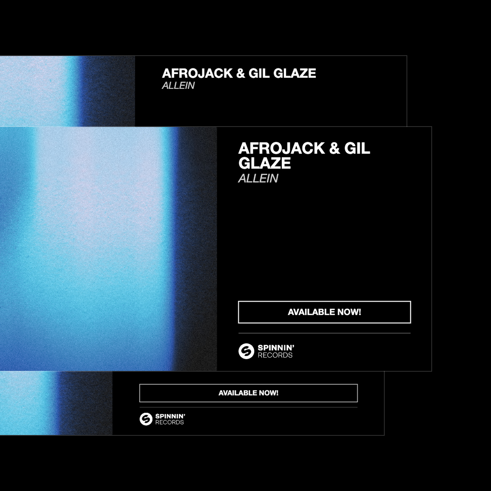
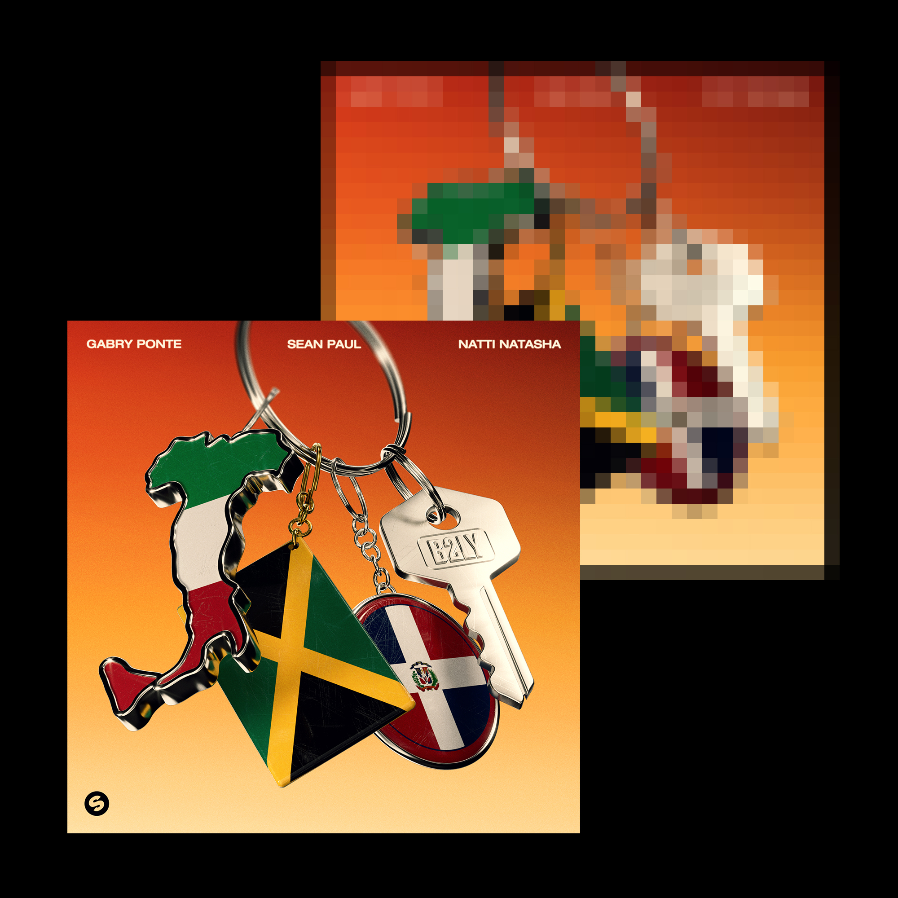
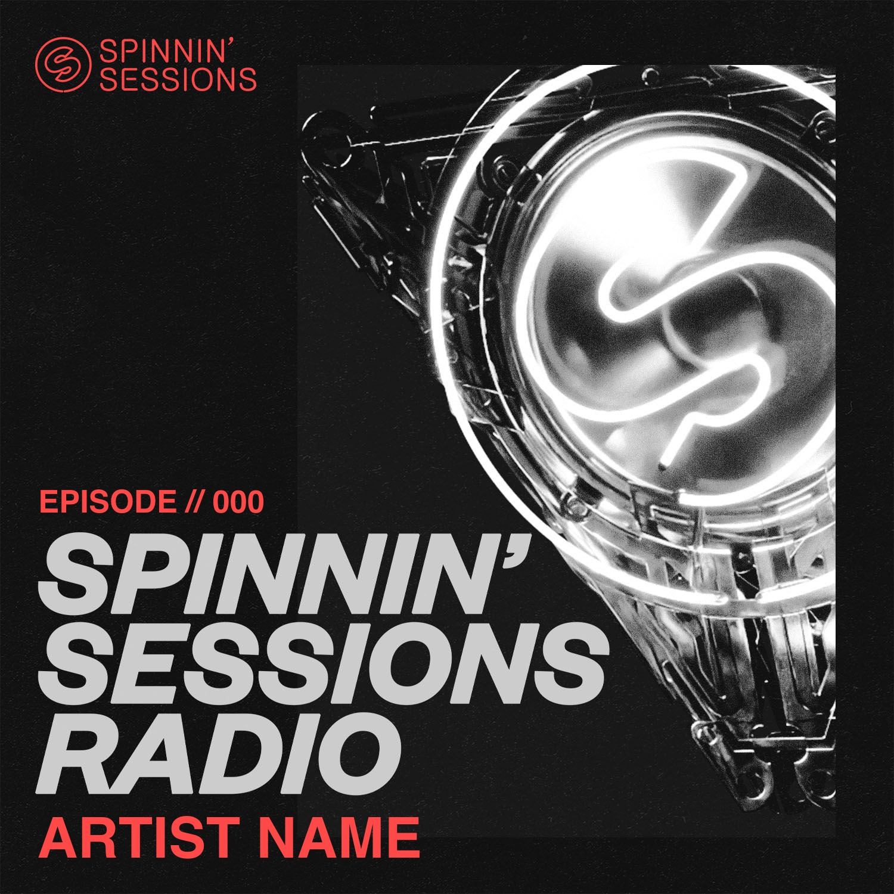
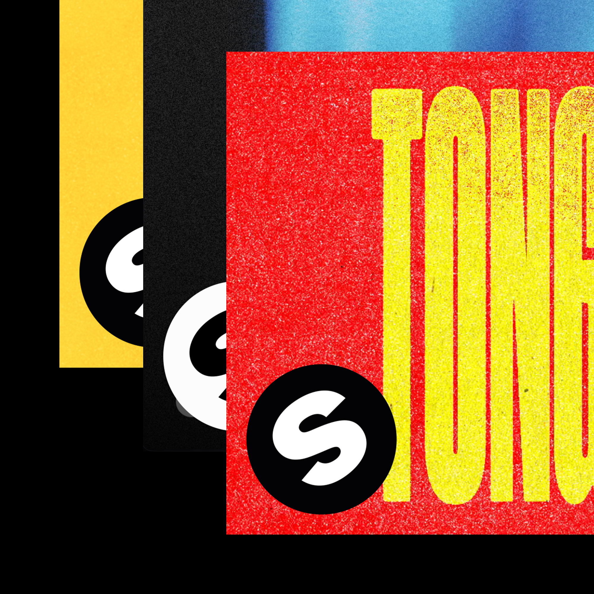

Every asset generator in one place. Pick a tool to open it.

Social Banner Creator
Turns one piece of key art into banners for every platform. Label logo and colours applied automatically.

Cover Converter
Standardises any cover to a 2000×2000 JPG at 72 DPI. Centered on a black canvas.

Sessions Asset Generator
Fills in artist and episode number for Spinnin' Sessions Radio. Draws them onto all 9 official templates.

Thumbnail Maker
Places a label overlay, logo included, on top of any background image. Exports as a 1920×1080 PNG thumbnail.